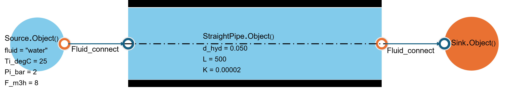
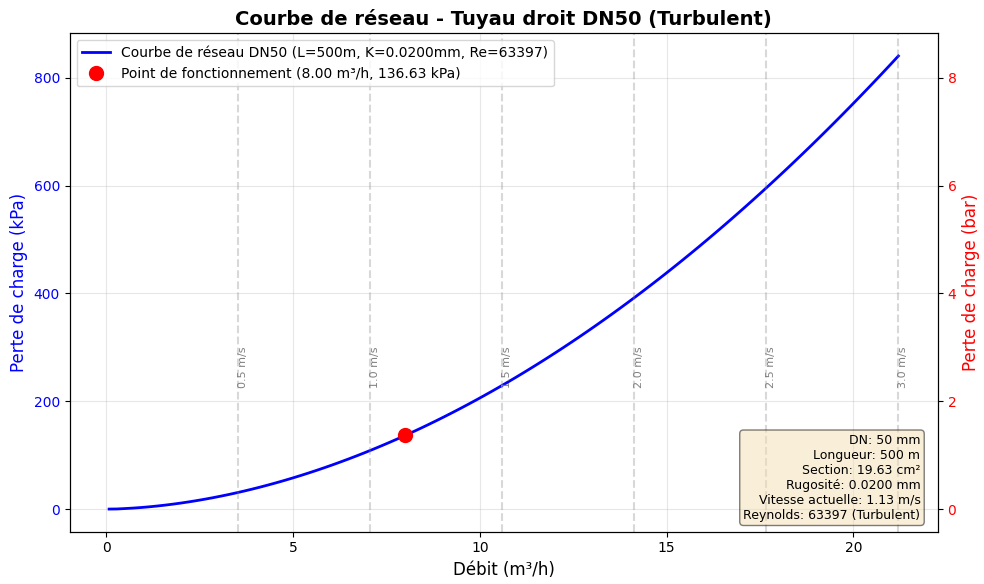

Section 4 : Distribution de l’energy
4.1. Transfer de chaleur
4.1.1. CompositeWall - Paroi multicouche
Le module CompositeWall allows calculer les transferts thermiques à travers des parois multicouches.

from energysystemmodels.HeatTransfer import CompositeWall, Layer
# Définir les couches de la paroi
couche_interieure = Layer(
nom="Plâtre",
epaisseur_m=0.013,
conductivite_W_mK=0.35
)
couche_isolation = Layer(
nom="Laine de verre",
epaisseur_m=0.20,
conductivite_W_mK=0.04
)
couche_exterieure = Layer(
nom="Brique",
epaisseur_m=0.10,
conductivite_W_mK=0.80
)
# Créer la paroi composite
paroi = CompositeWall(
surface_m2=15.0,
layers=[couche_interieure, couche_isolation, couche_exterieure],
h_int=7.7, # Coefficient d'échange intérieur W/m²K
h_ext=25.0 # Coefficient d'échange extérieur W/m²K
)
# Calculer la résistance thermique
R_totale = paroi.resistance_thermique_totale()
U = paroi.coefficient_transmission_thermique()
print(f"Résistance thermique totale : {R_totale:.3f} m².K/W")
print(f"Coefficient U : {U:.3f} W/m².K")
# Flux thermique pour une différence de température
T_int = 20 # °C
T_ext = -5 # °C
flux_thermique = paroi.calculer_flux_thermique(T_int, T_ext)
print(f"Flux thermique : {flux_thermique:.2f} W")
print(f"Déperditions : {flux_thermique/1000:.2f} kW")
Example issu des tests : CompositeWall
from HeatTransfer import CompositeWall
wall = CompositeWall.Object(he=23, hi=8, Ti=20, Te=-10, A=10)
wall.add_layer(thickness=0.20, material='Parpaings creux')
wall.add_layer(thickness=0.05, material='Polystyrène')
wall.add_layer(thickness=0.02, material='Plâtre')
wall.calculate()
print(f"Résistance totale: {wall.R_total:.3f} m².K/W")
print(f"Flux thermique: {wall.Q:.2f} W")
print(wall.df)
4.1.2. PlateHeatTransfer - Échangeur à plaques

from energysystemmodels.HeatTransfer import PlateHeatExchanger
# Échangeur à plaques
echangeur = PlateHeatExchanger(
nombre_plaques=30,
surface_echange_par_plaque_m2=0.35,
epaisseur_plaque_mm=0.6,
espacement_plaques_mm=3.0,
materiau="acier_inox"
)
# Conditions d'entrée
# Circuit chaud
T_chaud_entree = 80 # °C
debit_chaud = 2.0 # kg/s
# Circuit froid
T_froid_entree = 15 # °C
debit_froid = 1.8 # kg/s
# Calculer l'efficacité et les températures de sortie
resultats = echangeur.calculate_performance(
T_hot_in=T_chaud_entree,
T_cold_in=T_froid_entree,
m_dot_hot=debit_chaud,
m_dot_cold=debit_froid
)
print(f"Efficacité : {resultats['efficacite']:.1%}")
print(f"Température sortie circuit chaud : {resultats['T_hot_out']:.1f}°C")
print(f"Température sortie circuit froid : {resultats['T_cold_out']:.1f}°C")
print(f"Puissance échangée : {resultats['puissance_kW']:.2f} kW")
print(f"Pertes de charge circuit chaud : {resultats['delta_P_hot_Pa']:.0f} Pa")
print(f"Pertes de charge circuit froid : {resultats['delta_P_cold_Pa']:.0f} Pa")
Example issu des tests : PlateHeatTransfer
from HeatTransfer import PlateHeatTransfer
plate1 = PlateHeatTransfer.Object(
orientation='horizontal_down',
Tp=60,
Ta=25,
W=1.0,
L=1.0
)
heat_transfer1 = plate1.calculate()
print(f"Heat transfer for horizontal plate facing down: {heat_transfer1} W")
4.1.3. PipeInsulation - Isolation de tuyauteries
from energysystemmodels.HeatTransfer import PipeInsulation
# Tuyauterie isolée
tuyau = PipeInsulation(
diametre_interieur_mm=50,
diametre_exterieur_mm=60,
epaisseur_isolation_mm=30,
longueur_m=50,
conductivite_tuyau_W_mK=50, # Acier
conductivite_isolation_W_mK=0.04, # Laine minérale
temperature_fluide_C=80,
temperature_ambiante_C=20
)
# Calculer les pertes thermiques
pertes = tuyau.calculer_pertes_thermiques()
print(f"Pertes thermiques linéiques : {pertes['pertes_lineiques_W_m']:.2f} W/m")
print(f"Pertes thermiques totales : {pertes['pertes_totales_W']:.2f} W")
print(f"Pertes thermiques totales : {pertes['pertes_totales_W']/1000:.2f} kW")
# Température de surface extérieure
T_surface = tuyau.temperature_surface_exterieure()
print(f"Température surface extérieure : {T_surface:.1f}°C")
Example issu des tests : PipeInsulationAnalysis
from HeatTransfer import PipeInsulationAnalysis
pipe = PipeInsulationAnalysis.Object(
fluid='water', T_fluid=70, F_m3h=20, DN=80, L_tube=500,
material='Acier', insulation='laine minérale',
insulation_thickness=0.04, Tamb=20
)
pipe.calculate()
print(pipe.df)
Example : Optimisation de l’épaisseur d’isolation
from energysystemmodels.HeatTransfer import PipeInsulation
import numpy as np
# Paramètres fixes
diametre_tuyau = 100 # mm
longueur = 100 # m
T_fluide = 90 # °C
T_ambient = 20 # °C
heures_fonctionnement = 6000 # h/an
cout_energie = 0.10 # €/kWh
# Tester différentes épaisseurs d'isolation
epaisseurs_test = np.arange(10, 100, 10) # mm
print("Optimisation de l'épaisseur d'isolation :")
print("-" * 80)
print(f"{'Épaisseur (mm)':<15} {'Pertes (kW)':<15} {'Coût annuel (€)':<20}")
print("-" * 80)
for epaisseur in epaisseurs_test:
tuyau = PipeInsulation(
diametre_interieur_mm=diametre_tuyau,
diametre_exterieur_mm=diametre_tuyau + 5,
epaisseur_isolation_mm=epaisseur,
longueur_m=longueur,
conductivite_tuyau_W_mK=50,
conductivite_isolation_W_mK=0.035,
temperature_fluide_C=T_fluide,
temperature_ambiante_C=T_ambient
)
pertes = tuyau.calculer_pertes_thermiques()
pertes_kW = pertes['pertes_totales_W'] / 1000
energie_annuelle_kWh = pertes_kW * heures_fonctionnement
cout_annuel = energie_annuelle_kWh * cout_energie
print(f"{epaisseur:<15.0f} {pertes_kW:<15.3f} {cout_annuel:<20.2f}")
4.2. Hydraulique
4.2.1. StraightPipe - Tuyauterie droite et pertes de charge
{kind=link}

from energysystemmodels.Hydraulic import StraightPipe
# Définir la tuyauterie
tuyau = StraightPipe(
longueur_m=100,
diametre_mm=50,
rugosite_mm=0.05, # Acier neuf
materiau="acier"
)
# Fluide : eau à 20°C
debit_m3_h = 10.0
# Calculer les pertes de charge
resultats = tuyau.calculer_pertes_charge(
debit_m3_h=debit_m3_h,
temperature_C=20
)
print(f"Débit : {debit_m3_h} m³/h")
print(f"Vitesse : {resultats['vitesse_m_s']:.2f} m/s")
print(f"Nombre de Reynolds : {resultats['reynolds']:.0f}")
print(f"Régime : {resultats['regime']}")
print(f"Pertes de charge linéaires : {resultats['pertes_lineaires_Pa']:.1f} Pa")
print(f"Pertes de charge linéaires : {resultats['pertes_lineaires_Pa']/100:.1f} mCE")
Example issu des tests : StraightPipe (réseau hydraulique)
from ThermodynamicCycles.Hydraulic import StraightPipe
from ThermodynamicCycles.Source import Source
from ThermodynamicCycles.Sink import Sink
from ThermodynamicCycles.Connect import Fluid_connect
SOURCE = Source.Object()
SOURCE.fluid = "water"
SOURCE.Ti_degC = 25
SOURCE.Pi_bar = 2
SOURCE.F_m3h = 8
SOURCE.calculate()
STRAIGHT_PIPE = StraightPipe.Object()
STRAIGHT_PIPE.d_hyd = 0.050
STRAIGHT_PIPE.L = 500
STRAIGHT_PIPE.K = 0.00002
Fluid_connect(STRAIGHT_PIPE.Inlet, SOURCE.Outlet)
STRAIGHT_PIPE.calculate()
SINK = Sink.Object()
Fluid_connect(SINK.Inlet, STRAIGHT_PIPE.Outlet)
SINK.calculate()
print(SOURCE.df)
print(STRAIGHT_PIPE.df)
print(SINK.df)
Courbe de réseau
{kind=link}

from energysystemmodels.Hydraulic import StraightPipe
import numpy as np
import matplotlib.pyplot as plt
tuyau = StraightPipe(
longueur_m=150,
diametre_mm=65,
rugosite_mm=0.05,
materiau="acier"
)
# Calculer la courbe de réseau
debits = np.linspace(0.1, 30, 50) # m³/h
pertes = []
for debit in debits:
resultats = tuyau.calculer_pertes_charge(debit, 20)
pertes.append(resultats['pertes_lineaires_Pa'] / 100) # Convertir en mCE
# Tracer la courbe
plt.figure(figsize=(10, 6))
plt.plot(debits, pertes, linewidth=2)
plt.xlabel('Débit (m³/h)')
plt.ylabel('Perte de charge (mCE)')
plt.title('Courbe de réseau hydraulique')
plt.grid(True, alpha=0.3)
plt.show()
4.2.2. TA_Valve - Vanne d’équilibrage hydraulique

from energysystemmodels.Hydraulic import TA_Valve
# Vanne TA DN50
vanne = TA_Valve(
dn=50,
kvs=25.0, # Coefficient Kvs
position=3 # Position de réglage (1-7)
)
# Calculer le Kv à cette position
kv = vanne.get_kv_at_position(position=3)
print(f"Kv à la position 3 : {kv:.2f}")
# Débit souhaité
debit_souhaite = 5.0 # m³/h
# Calculer la perte de charge
delta_P = vanne.calculer_perte_charge(debit_m3_h=debit_souhaite)
print(f"Perte de charge pour {debit_souhaite} m³/h : {delta_P:.1f} Pa")
print(f"Perte de charge : {delta_P/100:.2f} mCE")
# Trouver la position pour un débit et une perte de charge donnés
delta_P_disponible = 5000 # Pa
position_requise = vanne.trouver_position_pour_debit(
debit_m3_h=debit_souhaite,
delta_P_Pa=delta_P_disponible
)
print(f"Position recommandée : {position_requise}")
Courbe caractéristique de la vanne

from energysystemmodels.Hydraulic import TA_Valve
import numpy as np
import matplotlib.pyplot as plt
vanne = TA_Valve(dn=50, kvs=25.0)
# Tracer les courbes pour différentes positions
debits = np.linspace(0.5, 15, 50)
plt.figure(figsize=(10, 6))
for position in range(1, 8):
pertes = []
vanne.position = position
for debit in debits:
delta_P = vanne.calculer_perte_charge(debit)
pertes.append(delta_P / 100) # En mCE
plt.plot(debits, pertes, label=f'Position {position}', linewidth=2)
plt.xlabel('Débit (m³/h)')
plt.ylabel('Perte de charge (mCE)')
plt.title('Courbes caractéristiques - Vanne TA DN50')
plt.legend()
plt.grid(True, alpha=0.3)
plt.show()
4.3. Réseaux aérauliques
4.3.1. AirDuct - Conduits d’air et pertes de charge aérauliques
from energysystemmodels.Hydraulic import AirDuct
# Gaine rectangulaire
gaine = AirDuct(
type_section="rectangulaire",
largeur_mm=400,
hauteur_mm=200,
longueur_m=50,
rugosite_mm=0.1, # Acier galvanisé
materiau="acier_galvanise"
)
# Débit d'air
debit_air = 3000 # m³/h
temperature = 20 # °C
# Calculer les pertes de charge
resultats = gaine.calculer_pertes_charge(
debit_m3_h=debit_air,
temperature_C=temperature
)
print(f"Débit : {debit_air} m³/h")
print(f"Vitesse : {resultats['vitesse_m_s']:.2f} m/s")
print(f"Diamètre hydraulique : {resultats['diametre_hydraulique_mm']:.1f} mm")
print(f"Pertes de charge linéaires : {resultats['pertes_lineaires_Pa']:.2f} Pa")
print(f"Pertes de charge totales : {resultats['pertes_totales_Pa']:.2f} Pa")
Gaine circulaire
from energysystemmodels.Hydraulic import AirDuct
# Gaine circulaire
gaine_circ = AirDuct(
type_section="circulaire",
diametre_mm=315,
longueur_m=30,
rugosite_mm=0.05,
materiau="acier_galvanise"
)
# Calculer pour différents débits
debits_test = [1000, 2000, 3000, 4000]
print("Performances gaine circulaire Ø315 mm :")
print("-" * 70)
print(f"{'Débit (m³/h)':<15} {'Vitesse (m/s)':<15} {'ΔP (Pa)':<15}")
print("-" * 70)
for debit in debits_test:
res = gaine_circ.calculer_pertes_charge(debit, 20)
print(f"{debit:<15.0f} {res['vitesse_m_s']:<15.2f} {res['pertes_lineaires_Pa']:<15.2f}")
Singularités aérauliques
from energysystemmodels.Hydraulic import AirDuct, Singularity
gaine = AirDuct(
type_section="circulaire",
diametre_mm=250,
longueur_m=20,
materiau="acier_galvanise"
)
# Ajouter des singularités
coude_90 = Singularity(type="coude_90", coefficient_perte=0.9)
te_divergent = Singularity(type="te_divergent", coefficient_perte=1.3)
registre = Singularity(type="registre", coefficient_perte=0.5)
gaine.add_singularity(coude_90)
gaine.add_singularity(te_divergent)
gaine.add_singularity(registre)
# Calculer les pertes totales
debit = 2500 # m³/h
resultats = gaine.calculer_pertes_charge_totales(debit, 20)
print(f"Pertes linéaires : {resultats['pertes_lineaires_Pa']:.1f} Pa")
print(f"Pertes singulières : {resultats['pertes_singulieres_Pa']:.1f} Pa")
print(f"Pertes totales : {resultats['pertes_totales_Pa']:.1f} Pa")